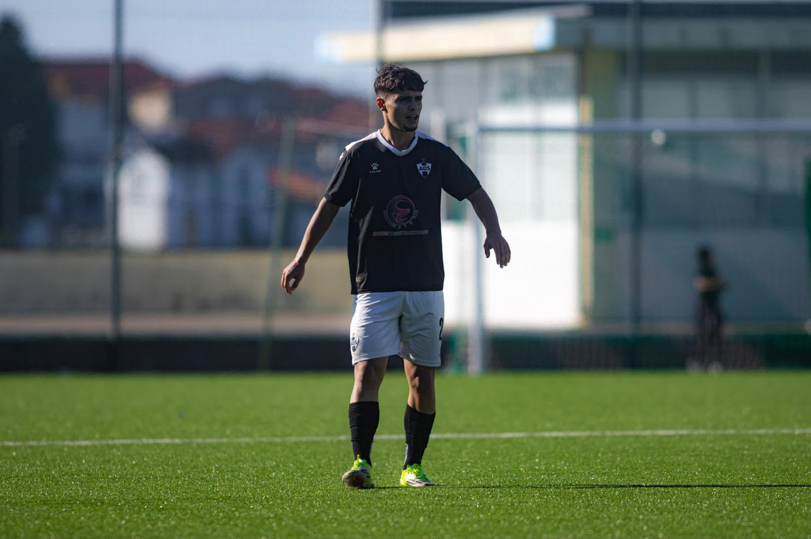
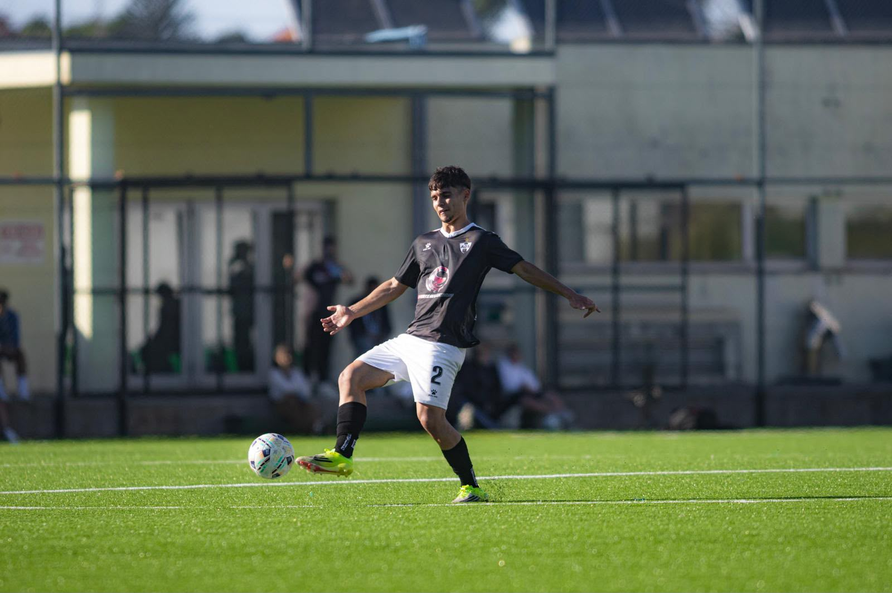
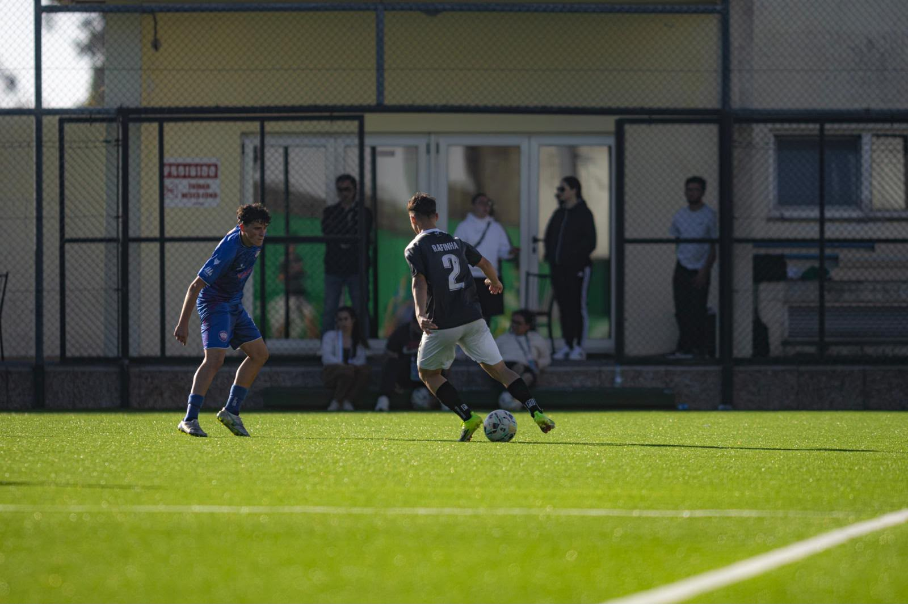
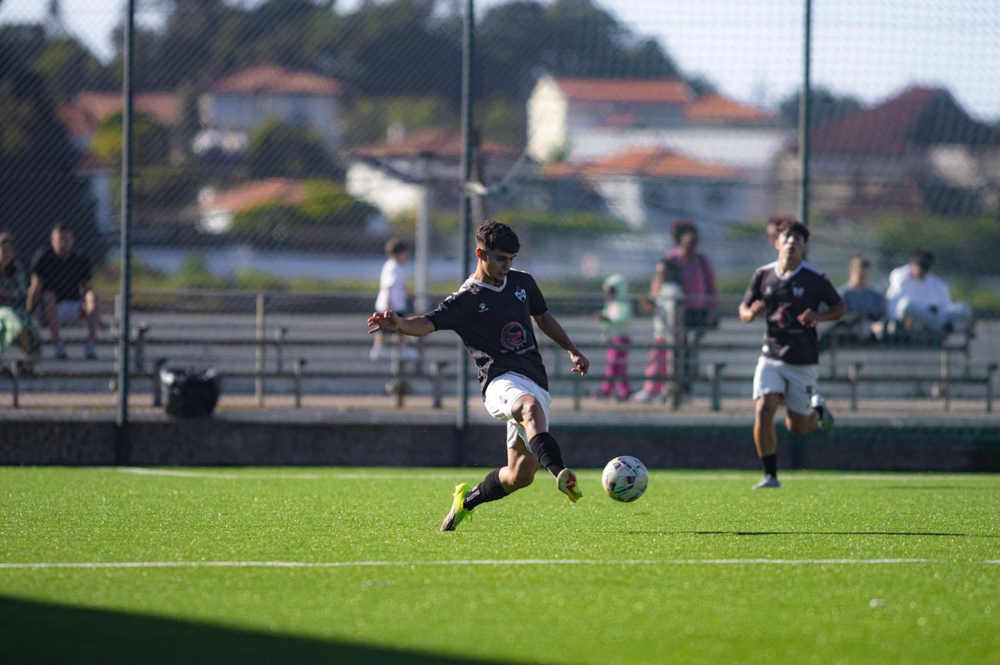

Talento, garra e polivalência no corredor direito. Com 18 anos já conta com presenças na Taça de Portugal e Liga 3.
177 cm
68 kg
Direito (Chuta com os 2)
Lateral Direito
A.D. Sanjoanense o clube aonde se destacou nas últimas 5 épocas.
Campeão distrital com subida de divisão. Alcançou ainda as finais (vencido) da Taça Distrital de Aveiro e da Supertaça Distrital.
Mais um título de Campeão Distrital e respetiva subida de divisão. Finalista vencido na Supertaça de Aveiro.
Conquista fantástica com a subida ao Campeonato Nacional da 1ª Divisão de Sub 17.
Campeão Distrital e nova subida de divisão. Vencedor absoluto com a conquista da Taça e Supertaça do distrito de Aveiro.
Disputa do Campeonato Nacional da II Divisão, alcançando um meritório 5º lugar. Nova conquista da Taça e Supertaça de Aveiro.


